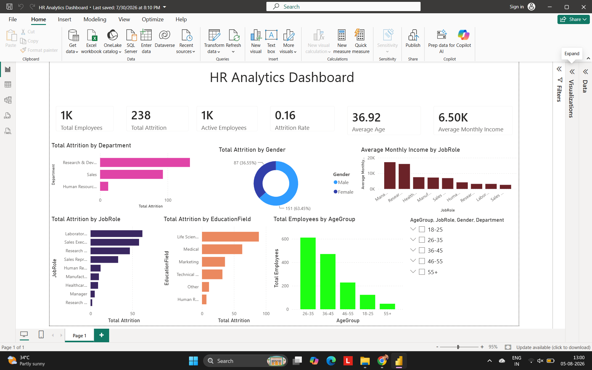

PROJECT 01
HR Analytics Dashboard
An interactive Power BI dashboard designed to analyze employee attrition, workforce characteristics, departments, job roles, demographics and HR KPIs.
DASHBOARD PREVIEW

ABOUT THE PROJECT
Workforce data into meaningful insights.
Developed an interactive HR analytics dashboard using an employee dataset containing 1,481 records and 39 attributes.
The dashboard analyzes employee attrition, demographics, departments, job roles and workforce characteristics.
Data was cleaned and transformed using Power Query, while DAX measures were created for KPI and analytical calculations.
KEY FEATURES
Attrition Analysis
Analyze employee attrition patterns and workforce trends.
Workforce Analysis
Explore employee distribution across departments and job roles.
KPI Analysis
Developed calculated measures and KPIs using DAX.
Interactive Dashboard
Used slicers, filters, KPI cards and interactive visualizations.
TOOLS & TECHNIQUES
NEXT PROJECT
Supply Chain Analytics →